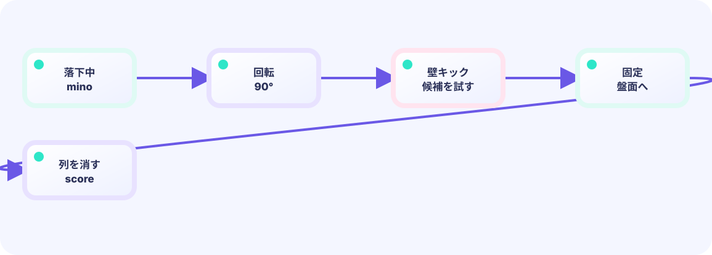

接地を調べる
1マス下が床か使用中なら、もう落下できません。見た目だけでなく盤面配列へ書き込みます。
board[y][x] = true★★★☆☆ / PLAYABLE
落下中の形を盤面へ書き込み、埋まった行を消して上の行を下げます。
PLAYABLE / WEBASSEMBLY
← →または画面ボタンで移動、↓かSpaceで落下。空いた2マスを埋めると行が消えます。
はじめて読む人へ
盤面への合成は落下中の四マスをboardへ固定すること、行の圧縮は満杯行より上を一段下へコピーして空きを詰めることです。 PLAYABLEは『このページで実際に操作できる』という印です。
このページの1本
説明と次のコードを対応させてから、ゲームで変化を確かめよう。
lockPiece(); copy(board[1:y+1],board[0:y])
DEEP DIVE / LOCK AND COMPACT
接地した瞬間、落下中の2マスをboardへ固定します。次に各行を調べ、全部埋まった行は飛ばし、それ以外を下から順にコピーします。
1マス下が床か使用中なら、もう落下できません。見た目だけでなく盤面配列へ書き込みます。
board[y][x] = true左から右まで1個でも空きがあれば残します。8マスすべてtrueの行だけを消去数へ足します。
full = full && board[y][x]readで読む行、writeで書く行を分けます。満員の行はコピーせず、残った行だけを下へ移します。
board[write] = board[read]TRY IT / FULL ROW
黄色い行はマスが全部埋まっています。「行を消す」とその行だけ消えて、上の行が落ちてきます。テトリス型の得点は、この「埋まっているか」判定から始まります。
複数行が同時に埋まっていれば、まとめて消えます。
THE FULL-ROW RULE
行の全マスが true なら消すつぎに残った行を下へ詰める消す行の数を得点表に渡すと、シングル〜テトリスの点が作れます。
IN THE REAL GAME
満員でない行だけwrite位置へコピーし、最後に余った上側を空の行で埋めます。
write := rows - 1
for read := rows - 1; read >= 0; read-- {
if rowIsFull(read) { continue }
board[write] = board[read]
write--
}
for write >= 0 { board[write] = emptyRow; write-- }WHY LOCK FIRST?
落下中のピースも書き込んでから調べないと、最後の2マスが数えられません。
WHY BOTTOM-UP?
下から詰めれば、まだ読んでいない上の行を壊しません。
TRY NEXT
1行は100点、2行同時なら300点にしてみよう。
FEEDBACK